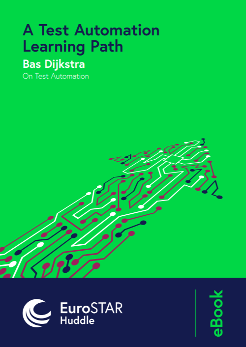
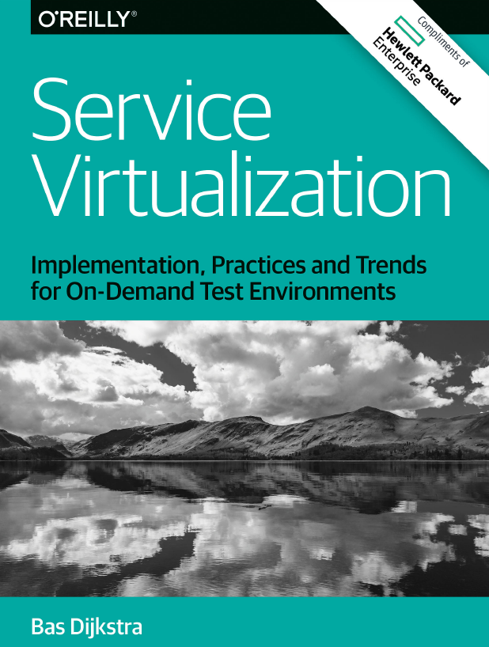

Hi, I'm Bas, and I've been working in test automation for about 18 years now. Most of that time I spent working as a test automation engineer, but these days I'm mostly active as a consultant and trainer.
I'm also dabbling in open-source software development, mainly in C#, and I'm the developer of RestAssured.Net, a library that strives to make writing tests for HTTP-based APIs in C# simple and fun.
Looking for an opportunity to join a workshop I facilitate?
| Date | Course | Location | Language | With | |
|---|---|---|---|---|---|
| April 7-8, 2025 | API testing masterclass | Baarn (NL) | English | ICT Improve | |
| May 6, 2025 | API security testing workshop | online | English | self-hosted | |
| June 10, 2025 | Mutation testing workshop | online | English | self-hosted |
Here's where you can find me speaking:
| Date | Title | Language | With | |
|---|---|---|---|---|
| May 27-28, 2025 | Are you sure your APIs are secure? (talk / demo) | English | Live2Test conference (online) | |
| October 6, 2025 | Are you sure your APIs are secure? (talk and workshop) | English | SAST (Stockholm, SE) |
I have written a couple of short ebooks, available for free:
|  | A Test Automation Learning Path (2020) For those of you looking to take your first or your next step in becoming a (better) test automation engineer, I'm presenting a learning path in this ebook that is meant to give you some guidance along the way, as well as pointers to helpful resources. Spoiler alert: there's much more to it than just learning the ins and outs of a specific tool! This ebook is published by the team at EuroSTAR Huddle. |
|  | Service Virtualization - Implementation, Practices and Trends for On-Demand Test Environments (2016) If you're looking for a comprehensive introduction to service virtualization and how it can help you test earlier, more and more often, this ebook is exactly what you're looking for. This ebook is written in collaboration with and published by Hewlett Packard Enterprise. |